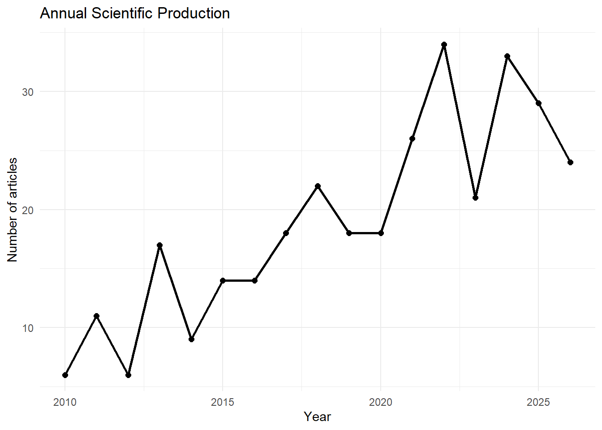
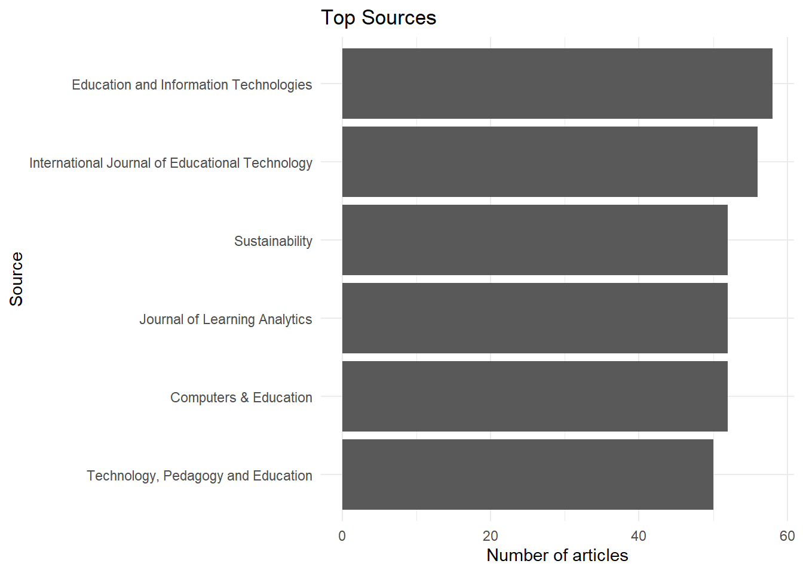
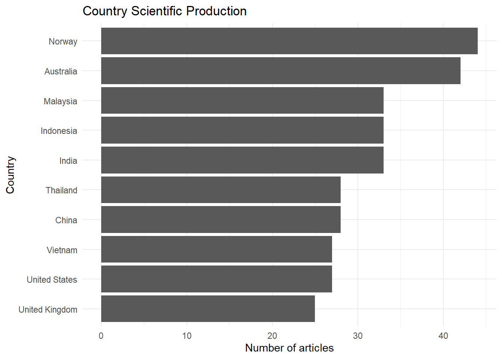
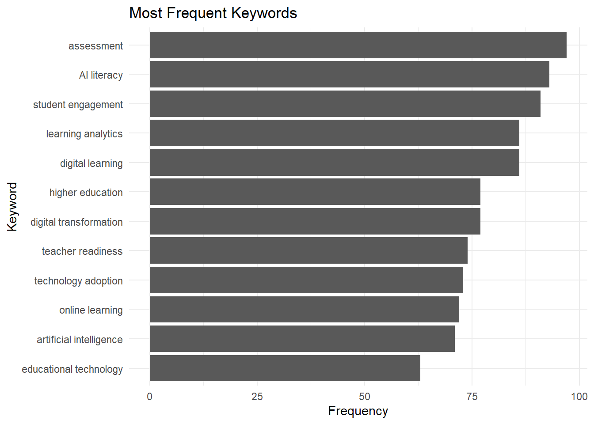
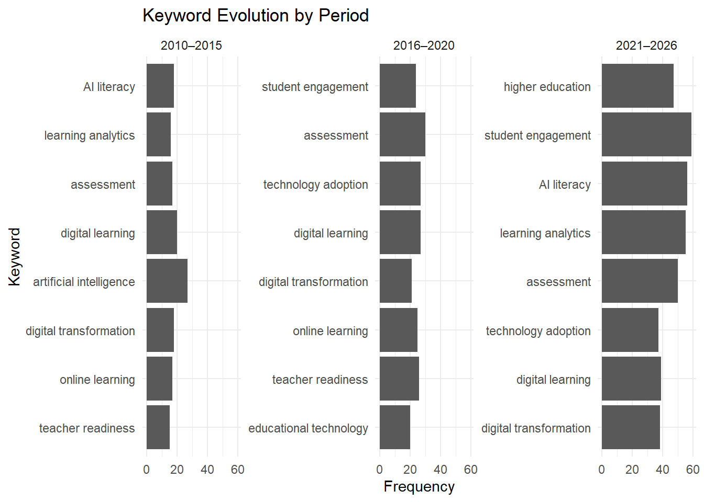
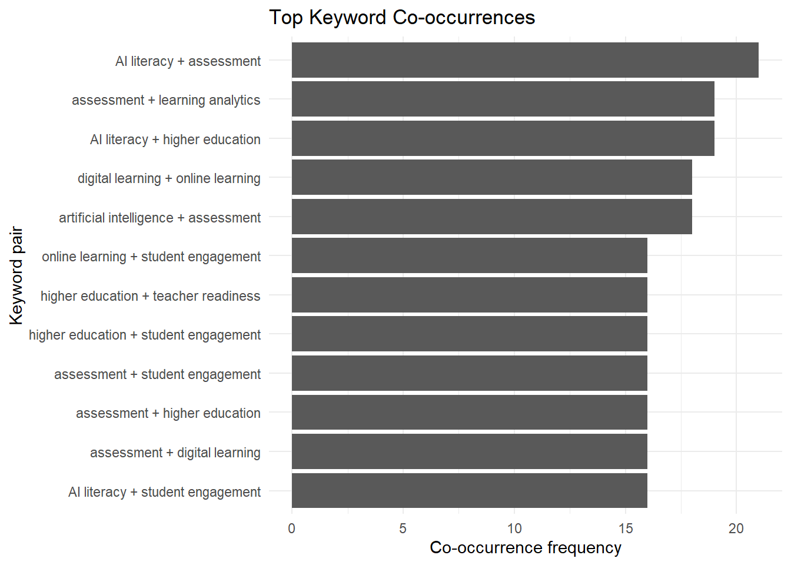
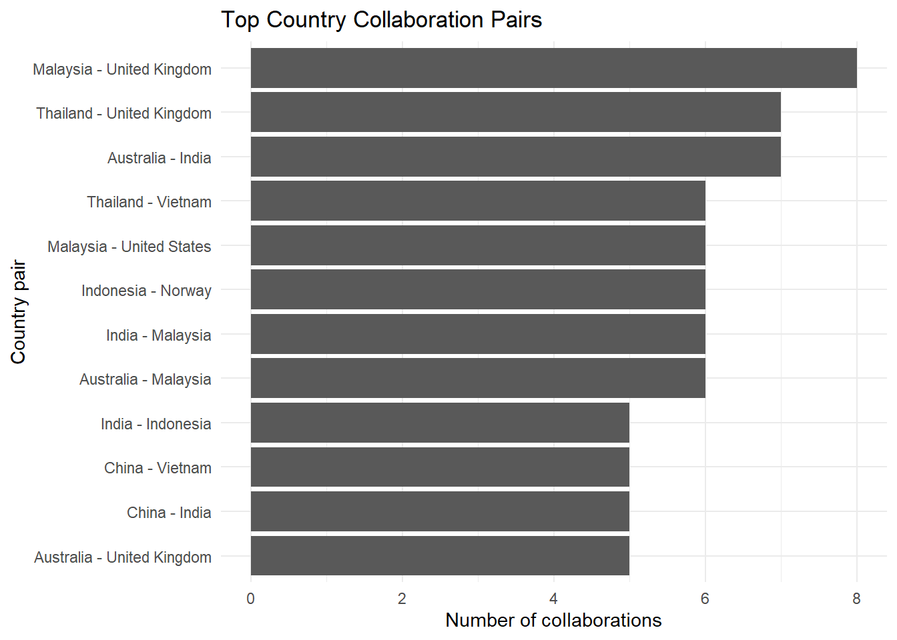
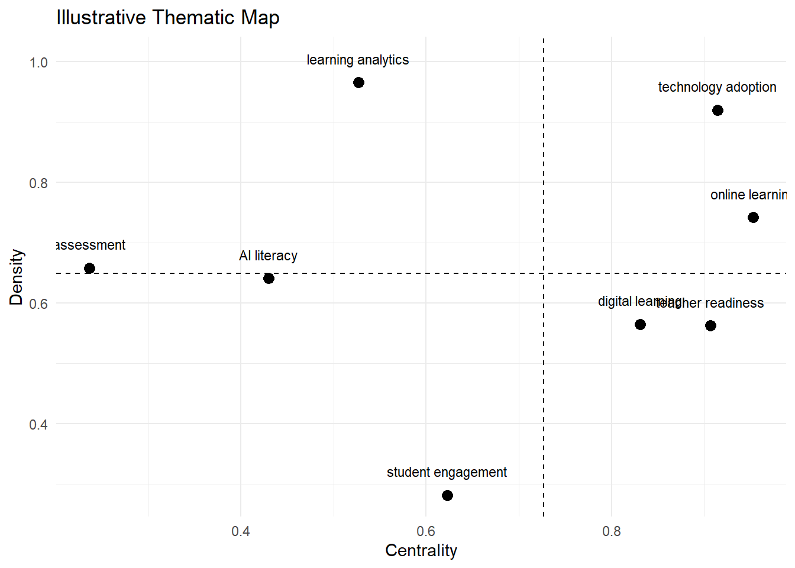

flowchart TD A[Research Topic] --> B[Search Query] B --> C[Scopus / Web of Science Export] C --> D[Import to R] D --> E[Descriptive Analysis] E --> F[Source and Author Analysis] F --> G[Keyword Analysis] G --> H[Network Analysis] H --> I[Thematic Interpretation] I --> J[Bibliometric Report]
Advanced 12. Phân tích Thư mục Khoa học
Bibliometric Analysis with R and Bibliometrix
Tổng quan bài học
TipKết quả học tập (Learning Outcomes)
Sau khi hoàn thành bài học này, học viên có thể:
- Hiểu phân tích thư mục khoa học (Bibliometric Analysis)
- Phân biệt bibliometric review và systematic review
- Hiểu cấu trúc dữ liệu Scopus/Web of Science
- Biết dùng
bibliometrixvàbiblioshiny - Phân tích tăng trưởng công bố theo năm
- Xác định nguồn xuất bản hàng đầu
- Xác định tác giả, quốc gia và tổ chức nổi bật
- Phân tích từ khóa và xu hướng chủ đề
- Hiểu co-authorship, co-citation và co-word analysis
- Tạo biểu đồ bibliometric bằng
ggplot2 - Viết kết quả bibliometric theo chuẩn học thuật
NoteLogic bài học (Module Logic)
Bài học này trả lời câu hỏi:
Làm thế nào để dùng dữ liệu thư mục khoa học để hiểu cấu trúc, xu hướng và bản đồ tri thức của một lĩnh vực nghiên cứu?
Quy trình:
Search Strategy
↓
Database Export
↓
Data Import
↓
Descriptive Bibliometrics
↓
Sources / Authors / Countries
↓
Keyword Analysis
↓
Science Mapping
↓
Thematic Interpretation
↓
Academic ReportingQuy trình bibliometric analysis
1. Bibliometric analysis là gì?
NoteKiến thức nền tảng (Knowledge Notes)
Là gì? (What?)
Phân tích thư mục khoa học (Bibliometric Analysis) là phương pháp định lượng dùng dữ liệu công bố khoa học để phân tích cấu trúc, xu hướng và sự phát triển của một lĩnh vực nghiên cứu.
Tại sao cần? (Why?)
Bibliometric analysis giúp trả lời:
- Lĩnh vực này phát triển như thế nào theo thời gian?
- Tạp chí nào công bố nhiều nhất?
- Tác giả nào nổi bật?
- Quốc gia nào đóng góp nhiều?
- Từ khóa nào phổ biến?
- Chủ đề nào đang nổi lên?
- Các nhóm nghiên cứu liên kết với nhau ra sao?
Khi nào dùng? (When?)
Dùng khi muốn:
- Tổng quan một lĩnh vực lớn
- Xác định xu hướng nghiên cứu
- Tìm khoảng trống nghiên cứu
- Hỗ trợ systematic review
- Chuẩn bị phần introduction/literature review
- Viết bibliometric review
Thực hiện thế nào? (How?)
Trong R thường dùng:
bibliometrix
biblioshiny()và có thể kết hợp tidyverse, ggplot2.
ImportantỨng dụng trong nghiên cứu (Research Application)
Bibliometric analysis phù hợp cho:
- Tổng quan nghiên cứu giáo dục
- Nghiên cứu công nghệ giáo dục
- AI in education
- Sustainability
- Management
- Marketing
- Agriculture
- Climate change
- Health sciences
- Digital transformation
WarningSai lầm thường gặp (Common Mistakes)
Người học thường mắc lỗi:
- Không mô tả rõ search query
- Trộn dữ liệu nhiều nguồn nhưng không xử lý trùng lặp
- Chỉ chạy Biblioshiny mà không diễn giải
- Nhầm bibliometric analysis với systematic review
- Không kiểm tra dữ liệu thiếu
- Diễn giải network quá mức
- Không nêu ngày truy xuất dữ liệu
2. Bibliometric review và systematic review
TipKết quả học tập (Learning Outcomes)
Sau phần này, học viên có thể phân biệt bibliometric review và systematic review.
NoteKiến thức nền tảng (Knowledge Notes)
| Tiêu chí | Bibliometric Review | Systematic Review |
|---|---|---|
| Mục tiêu | Bản đồ lĩnh vực | Tổng hợp nội dung bằng chứng |
| Dữ liệu | Metadata công bố | Full text / nội dung nghiên cứu |
| Câu hỏi | Ai, ở đâu, khi nào, chủ đề gì | Bằng chứng nói gì |
| Phương pháp | Quantitative mapping | Thematic / evidence synthesis |
| Công cụ | Bibliometrix, VOSviewer | PRISMA, coding, synthesis |
| Kết quả | Networks, trends, maps | Themes, gaps, implications |
Bibliometric analysis rất tốt để thấy cấu trúc và xu hướng của lĩnh vực, nhưng không thay thế hoàn toàn systematic review nếu mục tiêu là tổng hợp nội dung nghiên cứu.
3. Chuẩn bị dữ liệu
NoteKiến thức nền tảng (Knowledge Notes)
Module này dùng dữ liệu mô phỏng để render ổn định.
Trong nghiên cứu thật, bạn có thể export dữ liệu từ:
- Scopus
- Web of Science
- Dimensions
- PubMed
- Crossref
Sau đó nhập vào R bằng bibliometrix::convert2df().
Cài đặt package
install.packages("tidyverse")
install.packages("bibliometrix")
install.packages("gt")
install.packages("patchwork")
install.packages("scales")
install.packages("igraph")
install.packages("ggraph")Nạp package
library(tidyverse)
library(gt)
library(patchwork)
library(scales)Kiểm tra bibliometrix
has_bibliometrix <- requireNamespace("bibliometrix", quietly = TRUE)
has_bibliometrix[1] FALSETạo dữ liệu thư mục mô phỏng
set.seed(123)
journals <- c(
"Computers & Education",
"Education and Information Technologies",
"International Journal of Educational Technology",
"Journal of Learning Analytics",
"Sustainability",
"Technology, Pedagogy and Education"
)
countries <- c(
"Vietnam", "Thailand", "Indonesia", "China", "United States",
"United Kingdom", "Australia", "Norway", "Malaysia", "India"
)
keywords_pool <- c(
"artificial intelligence",
"digital learning",
"teacher readiness",
"student engagement",
"learning analytics",
"technology adoption",
"online learning",
"digital transformation",
"educational technology",
"AI literacy",
"assessment",
"higher education"
)
bib_data <- tibble(
paper_id = 1:320,
year = sample(2010:2026, 320, replace = TRUE, prob = seq(1, 4, length.out = 17)),
source = sample(journals, 320, replace = TRUE),
country = sample(countries, 320, replace = TRUE),
citations = rpois(320, lambda = 12),
authors = paste0(
"Author_", sample(1:90, 320, replace = TRUE),
"; Author_", sample(1:90, 320, replace = TRUE)
),
keyword_1 = sample(keywords_pool, 320, replace = TRUE),
keyword_2 = sample(keywords_pool, 320, replace = TRUE),
keyword_3 = sample(keywords_pool, 320, replace = TRUE)
) |>
mutate(
title = paste("Study on", keyword_1, "and", keyword_2)
)
glimpse(bib_data)Rows: 320
Columns: 10
$ paper_id <int> 1, 2, 3, 4, 5, 6, 7, 8, 9, 10, 11, 12, 13, 14, 15, 16, 17, 1…
$ year <int> 2023, 2016, 2022, 2013, 2012, 2026, 2020, 2013, 2020, 2021, …
$ source <chr> "Computers & Education", "Sustainability", "Computers & Educ…
$ country <chr> "Australia", "United States", "United Kingdom", "India", "Un…
$ citations <int> 12, 6, 17, 7, 11, 9, 8, 12, 23, 6, 16, 12, 12, 13, 11, 15, 1…
$ authors <chr> "Author_18; Author_63", "Author_12; Author_72", "Author_71; …
$ keyword_1 <chr> "online learning", "student engagement", "digital learning",…
$ keyword_2 <chr> "learning analytics", "online learning", "digital transforma…
$ keyword_3 <chr> "digital transformation", "educational technology", "digital…
$ title <chr> "Study on online learning and learning analytics", "Study on…4. Import dữ liệu Scopus/Web of Science bằng bibliometrix
TipKết quả học tập (Learning Outcomes)
Sau phần này, học viên biết cú pháp nhập dữ liệu bibliometric thật.
NoteKiến thức nền tảng (Knowledge Notes)
Trong nghiên cứu thật, bạn thường export file từ Scopus hoặc Web of Science.
Ví dụ:
scopus_export.bib
wos_export.txtSau đó dùng:
convert2df()Import Scopus file
library(bibliometrix)
M <- convert2df(
file = "data/raw/scopus_export.bib",
dbsource = "scopus",
format = "bibtex"
)Import Web of Science file
library(bibliometrix)
M <- convert2df(
file = "data/raw/wos_export.txt",
dbsource = "wos",
format = "plaintext"
)Mở Biblioshiny
biblioshiny()
WarningSai lầm thường gặp (Common Mistakes)
Không nên chỉnh sửa thủ công file export nếu không cần thiết.
Nên lưu file raw gốc để đảm bảo tính tái lập.
5. Annual scientific production
TipKết quả học tập (Learning Outcomes)
Sau phần này, học viên có thể:
- Tính số công bố theo năm
- Vẽ xu hướng tăng trưởng công bố
- Diễn giải tốc độ phát triển của lĩnh vực
NoteKiến thức nền tảng (Knowledge Notes)
Annual scientific production cho biết số bài công bố mỗi năm.
Đây là kết quả rất thường gặp trong bibliometric review.
Tính số công bố theo năm
annual_production <- bib_data |>
count(year, name = "articles") |>
arrange(year)
annual_productionVẽ annual production
fig_annual <- ggplot(annual_production, aes(x = year, y = articles)) +
geom_line(linewidth = 1) +
geom_point(size = 2) +
labs(
title = "Annual Scientific Production",
x = "Year",
y = "Number of articles"
) +
theme_minimal()
fig_annual
ImportantDiễn giải kết quả (Interpretation)
Nếu số công bố tăng nhanh sau một mốc thời gian, có thể lĩnh vực đang nhận được sự quan tâm ngày càng lớn.
Tuy nhiên, cần kiểm tra liệu dữ liệu năm gần nhất có chưa đầy đủ hay không.
6. Top sources
TipKết quả học tập (Learning Outcomes)
Sau phần này, học viên có thể xác định các nguồn xuất bản nổi bật.
Top journals
top_sources <- bib_data |>
count(source, sort = TRUE) |>
slice_head(n = 10)
top_sourcesBiểu đồ top sources
fig_sources <- ggplot(top_sources, aes(x = n, y = reorder(source, n))) +
geom_col() +
labs(
title = "Top Sources",
x = "Number of articles",
y = "Source"
) +
theme_minimal()
fig_sources
WarningSai lầm thường gặp (Common Mistakes)
Nguồn có nhiều bài nhất không nhất thiết là nguồn có ảnh hưởng cao nhất.
Cần phân biệt:
- Productivity
- Impact
- Citation influence
8. Country production
TipKết quả học tập (Learning Outcomes)
Sau phần này, học viên có thể phân tích đóng góp theo quốc gia.
Country production
country_production <- bib_data |>
count(country, sort = TRUE)
country_productionBiểu đồ country production
fig_country <- ggplot(
country_production,
aes(x = n, y = reorder(country, n))
) +
geom_col() +
labs(
title = "Country Scientific Production",
x = "Number of articles",
y = "Country"
) +
theme_minimal()
fig_country
9. Citation analysis
TipKết quả học tập (Learning Outcomes)
Sau phần này, học viên có thể:
- Tính citation theo paper
- Xác định bài có citation cao
- Tính citation theo source hoặc country
Top cited papers
top_cited <- bib_data |>
arrange(desc(citations)) |>
select(title, year, source, country, citations) |>
slice_head(n = 10)
top_citedBảng top cited
top_cited |>
gt() |>
tab_header(
title = "Top Cited Papers",
subtitle = "Simulated bibliometric data"
)| Top Cited Papers | ||||
| Simulated bibliometric data | ||||
| title | year | source | country | citations |
|---|---|---|---|---|
| Study on online learning and student engagement | 2012 | Education and Information Technologies | India | 24 |
| Study on AI literacy and technology adoption | 2020 | Education and Information Technologies | United Kingdom | 23 |
| Study on online learning and online learning | 2016 | Education and Information Technologies | Indonesia | 21 |
| Study on assessment and learning analytics | 2022 | Technology, Pedagogy and Education | Australia | 21 |
| Study on digital transformation and student engagement | 2015 | Sustainability | Norway | 21 |
| Study on digital transformation and higher education | 2025 | International Journal of Educational Technology | United States | 20 |
| Study on assessment and assessment | 2024 | Computers & Education | China | 20 |
| Study on online learning and teacher readiness | 2020 | Sustainability | Australia | 20 |
| Study on teacher readiness and learning analytics | 2024 | Computers & Education | United States | 20 |
| Study on digital transformation and student engagement | 2025 | Journal of Learning Analytics | Indonesia | 20 |
Citation by source
citation_by_source <- bib_data |>
group_by(source) |>
summarise(
articles = n(),
total_citations = sum(citations),
mean_citations = mean(citations),
.groups = "drop"
) |>
arrange(desc(total_citations))
citation_by_source10. Keyword analysis
TipKết quả học tập (Learning Outcomes)
Sau phần này, học viên có thể:
- Tập hợp keywords
- Đếm tần suất keywords
- Vẽ keyword frequency
- Diễn giải chủ đề phổ biến
Tạo keyword long data
keyword_data <- bib_data |>
select(paper_id, year, starts_with("keyword")) |>
pivot_longer(
cols = starts_with("keyword"),
names_to = "keyword_position",
values_to = "keyword"
) |>
filter(!is.na(keyword))
top_keywords <- keyword_data |>
count(keyword, sort = TRUE) |>
slice_head(n = 15)
top_keywordsBiểu đồ top keywords
fig_keywords <- ggplot(
top_keywords,
aes(x = n, y = reorder(keyword, n))
) +
geom_col() +
labs(
title = "Most Frequent Keywords",
x = "Frequency",
y = "Keyword"
) +
theme_minimal()
fig_keywords
ImportantDiễn giải kết quả (Interpretation)
Keywords có tần suất cao thường đại diện cho các chủ đề trung tâm của lĩnh vực.
Tuy nhiên, cần xử lý đồng nghĩa trước khi kết luận.
Ví dụ:
AI
artificial intelligence
machine intelligencecó thể cần gộp.
11. Keyword evolution
TipKết quả học tập (Learning Outcomes)
Sau phần này, học viên có thể phân tích xu hướng từ khóa theo thời gian.
Tạo giai đoạn
keyword_evolution <- keyword_data |>
mutate(
period = case_when(
year <= 2015 ~ "2010–2015",
year <= 2020 ~ "2016–2020",
TRUE ~ "2021–2026"
)
) |>
count(period, keyword) |>
group_by(period) |>
slice_max(n, n = 8) |>
ungroup()
keyword_evolutionBiểu đồ keyword evolution
ggplot(
keyword_evolution,
aes(x = n, y = reorder(keyword, n))
) +
geom_col() +
facet_wrap(~ period, scales = "free_y") +
labs(
title = "Keyword Evolution by Period",
x = "Frequency",
y = "Keyword"
) +
theme_minimal()
Keyword evolution giúp phát hiện chủ đề mới nổi và sự dịch chuyển trọng tâm nghiên cứu.
12. Co-word analysis
TipKết quả học tập (Learning Outcomes)
Sau phần này, học viên hiểu logic co-word analysis ở mức nhập môn.
NoteKiến thức nền tảng (Knowledge Notes)
Co-word analysis kiểm tra các từ khóa thường xuất hiện cùng nhau trong cùng bài báo.
Nếu hai từ khóa thường đi cùng nhau, chúng có thể đại diện cho một cụm chủ đề.
Tạo keyword pairs
keyword_pairs <- keyword_data |>
select(paper_id, keyword) |>
distinct() |>
inner_join(
keyword_data |> select(paper_id, keyword) |> distinct(),
by = "paper_id",
suffix = c("_1", "_2")
) |>
filter(keyword_1 < keyword_2) |>
count(keyword_1, keyword_2, sort = TRUE)
keyword_pairs |>
slice_head(n = 15)Biểu đồ top keyword pairs
top_pairs <- keyword_pairs |>
slice_head(n = 12) |>
mutate(pair = paste(keyword_1, keyword_2, sep = " + "))
ggplot(top_pairs, aes(x = n, y = reorder(pair, n))) +
geom_col() +
labs(
title = "Top Keyword Co-occurrences",
x = "Co-occurrence frequency",
y = "Keyword pair"
) +
theme_minimal()
13. Collaboration network logic
TipKết quả học tập (Learning Outcomes)
Sau phần này, học viên hiểu logic mạng lưới hợp tác khoa học.
NoteKiến thức nền tảng (Knowledge Notes)
Collaboration network biểu diễn quan hệ hợp tác giữa:
- Tác giả
- Tổ chức
- Quốc gia
Trong module này, ta minh họa bằng country co-occurrence đơn giản.
Tạo dữ liệu hợp tác quốc gia mô phỏng
set.seed(123)
collab_data <- tibble(
paper_id = 1:180,
country_1 = sample(countries, 180, replace = TRUE),
country_2 = sample(countries, 180, replace = TRUE)
) |>
filter(country_1 != country_2) |>
mutate(
pair = paste(
pmin(country_1, country_2),
pmax(country_1, country_2),
sep = " - "
)
) |>
count(pair, sort = TRUE)
collab_data |>
slice_head(n = 10)Biểu đồ collaboration pairs
collab_data |>
slice_head(n = 12) |>
ggplot(aes(x = n, y = reorder(pair, n))) +
geom_col() +
labs(
title = "Top Country Collaboration Pairs",
x = "Number of collaborations",
y = "Country pair"
) +
theme_minimal()
14. Bibliometrix basic workflow
TipKết quả học tập (Learning Outcomes)
Sau phần này, học viên biết workflow cơ bản với bibliometrix.
Basic bibliometrix workflow
library(bibliometrix)
M <- convert2df(
file = "data/raw/scopus_export.bib",
dbsource = "scopus",
format = "bibtex"
)
results <- biblioAnalysis(M)
summary_results <- summary(
object = results,
k = 10,
pause = FALSE
)
plot(results, k = 10)Biblioshiny
biblioshiny()
ImportantỨng dụng trong nghiên cứu (Research Application)
biblioshiny() rất hữu ích cho người mới vì có giao diện point-and-click.
Tuy nhiên, để tái lập kết quả, nên lưu lại code hoặc mô tả rõ từng bước đã thực hiện.
15. Science mapping outputs
NoteKiến thức nền tảng (Knowledge Notes)
Các đầu ra thường gặp trong science mapping:
| Output | Ý nghĩa |
|---|---|
| Co-authorship network | Mạng hợp tác tác giả |
| Country collaboration map | Hợp tác quốc gia |
| Co-citation network | Cấu trúc tri thức nền |
| Bibliographic coupling | Nghiên cứu gần nhau về tài liệu tham khảo |
| Co-word network | Cụm chủ đề |
| Thematic map | Chủ đề motor/basic/emerging |
| Thematic evolution | Sự phát triển chủ đề theo thời gian |
16. Thematic map interpretation
TipKết quả học tập (Learning Outcomes)
Sau phần này, học viên hiểu cách đọc thematic map.
NoteKiến thức nền tảng (Knowledge Notes)
Thematic map thường chia chủ đề thành bốn vùng:
| Quadrant | Ý nghĩa |
|---|---|
| Motor themes | Chủ đề phát triển mạnh và quan trọng |
| Basic themes | Chủ đề nền tảng |
| Niche themes | Chủ đề chuyên biệt |
| Emerging/declining themes | Chủ đề mới nổi hoặc suy giảm |
Minh họa thematic map bằng dữ liệu mô phỏng
set.seed(123)
theme_data <- tibble(
theme = c(
"AI literacy",
"digital learning",
"learning analytics",
"teacher readiness",
"online learning",
"assessment",
"student engagement",
"technology adoption"
),
centrality = runif(8, 0.2, 1),
density = runif(8, 0.2, 1)
)
ggplot(theme_data, aes(x = centrality, y = density, label = theme)) +
geom_point(size = 3) +
geom_text(nudge_y = 0.04, size = 3) +
geom_vline(xintercept = median(theme_data$centrality), linetype = "dashed") +
geom_hline(yintercept = median(theme_data$density), linetype = "dashed") +
labs(
title = "Illustrative Thematic Map",
x = "Centrality",
y = "Density"
) +
theme_minimal()
WarningSai lầm thường gặp (Common Mistakes)
Không nên diễn giải thematic map như bằng chứng tuyệt đối.
Nó là công cụ hỗ trợ phát hiện cấu trúc chủ đề, cần đọc cùng nội dung bài báo tiêu biểu.
17. Viết kết quả học thuật
NoteKiến thức nền tảng (Knowledge Notes)
Khi viết bibliometric results, cần trình bày:
- Dữ liệu lấy từ đâu
- Search query
- Ngày truy xuất
- Số lượng tài liệu
- Phân bố theo năm
- Nguồn, tác giả, quốc gia
- Keyword trends
- Science mapping
- Giới hạn của dữ liệu
Template data source
The bibliometric dataset was retrieved from [database] on [date] using the search query [query]. After screening and data cleaning, [N] documents were retained for analysis.Template annual production
Annual scientific production increased substantially over the study period, indicating growing scholarly attention to the topic.Template sources
The most productive sources were [source names], suggesting that these journals represent key publication outlets in the field.Template keywords
Keyword analysis showed that [keyword 1], [keyword 2], and [keyword 3] were among the most frequent terms, indicating the central themes of the literature.Template thematic map
The thematic map indicated that [theme] emerged as a motor theme, while [theme] appeared as an emerging or declining theme. These results suggest a shift in the intellectual structure of the field.
WarningSai lầm thường gặp (Common Mistakes)
Không nên viết:
Bibliometric analysis proves that this topic is important.Nên viết:
The growth in publications suggests increasing scholarly attention to this topic.18. Bài tập thực hành
ImportantBài tập thực hành (Practice Exercise)
Hãy thực hiện:
- Tạo hoặc nhập dữ liệu bibliometric.
- Tính annual scientific production.
- Vẽ annual production.
- Xác định top sources.
- Xác định top authors.
- Xác định top countries.
- Tạo keyword frequency plot.
- Tạo keyword evolution theo giai đoạn.
- Tạo co-word pairs.
- Tạo collaboration pairs.
- Viết đoạn kết quả bibliometric.
19. Thử thách
WarningThử thách (Challenge)
Tình huống
Bạn có 1,200 bài báo từ Scopus về AI in Education.
Kết quả cho thấy:
- Công bố tăng mạnh sau 2020
- Một số tạp chí chiếm tỷ trọng lớn
- Keywords về generative AI xuất hiện nhiều sau 2022
- Collaboration network tập trung ở vài quốc gia
Câu hỏi
- Bạn sẽ trình bày kết quả nào trước?
- Cần kiểm tra gì trong search strategy?
- Keyword evolution nên diễn giải thế nào?
- Có thể kết luận lĩnh vực này đã trưởng thành chưa?
- Những giới hạn nào cần nêu?
TipGợi ý trả lời (Suggested Solution)
Một câu trả lời tốt nên nêu:
- Bắt đầu từ data source và search strategy.
- Trình bày annual production, sources, authors/countries.
- Sau đó trình bày keyword và thematic analysis.
- Diễn giải generative AI như chủ đề mới nổi nếu dữ liệu hỗ trợ.
- Cần nêu giới hạn database, search query, indexing bias và metadata quality.
20. Dự án nhỏ
ImportantDự án nhỏ (Mini Project)
Chủ đề
Bibliometric Analysis Report
Sản phẩm đầu ra
Học viên cần tạo:
Bibliometric_Analysis_Report.htmlNội dung báo cáo
- Research topic
- Search strategy
- Database and retrieval date
- Data cleaning
- Annual scientific production
- Top sources
- Top authors
- Country production
- Citation analysis
- Keyword analysis
- Keyword evolution
- Science mapping interpretation
- Limitations
- Future research directions
21. Điểm cần ghi nhớ
- Bibliometric analysis dùng metadata để phân tích cấu trúc lĩnh vực.
- Search query và database quyết định chất lượng kết quả.
- Annual production cho thấy xu hướng phát triển.
- Top sources/authors/countries cho thấy năng suất, không nhất thiết là chất lượng.
- Keyword analysis giúp xác định chủ đề trung tâm.
- Keyword evolution giúp phát hiện chủ đề mới nổi.
- Science mapping cần được diễn giải cùng nội dung học thuật.
- Bibliometric review không thay thế hoàn toàn systematic review.
- Cần báo cáo rõ ngày truy xuất và giới hạn dữ liệu.
22. Bước tiếp theo
NoteBước tiếp theo (What Next?)
Sau khi hoàn thành phần này, học viên nên:
- Biết cấu trúc dữ liệu bibliometric.
- Biết chạy phân tích mô tả thư mục.
- Biết tạo biểu đồ annual production, top sources và keywords.
- Biết hiểu science mapping outputs.
- Chuyển sang:
Trong phần tiếp theo, chúng ta sẽ học thiết kế thí nghiệm, ANOVA và so sánh nghiệm thức bằng R.